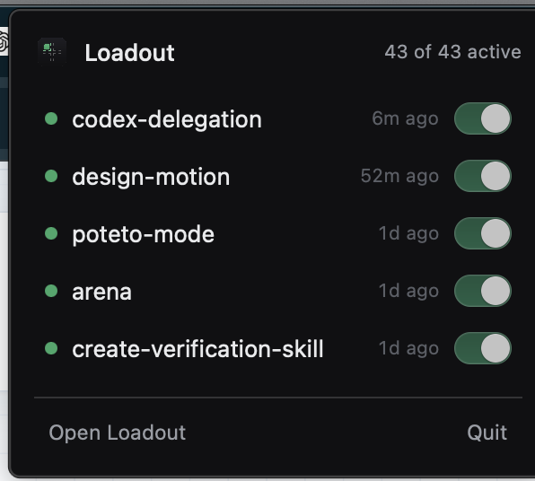
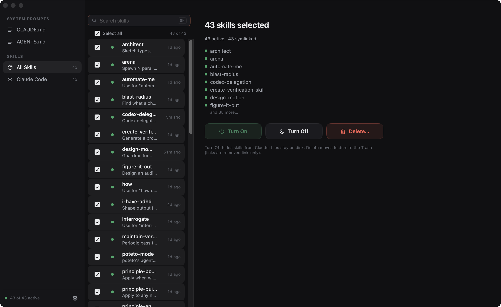

2026-07-24 · macOS 14+formerly shipped as Skillbox
Loadout is a menu-bar Mac app that shows every skill your
AI tools have installed and lets you equip or
bench each one. A loadout is the gear you take
into a match. This is where you kit out Claude Code before the work
starts.
● 43 of 43 activethe developer's real machine, not a mockupgreen dot = Claude can use it right now
Changes
what equipping actually does, mechanism by mechanism
+
One switch per skill for Claude Code
The switch writes Claude Code's own per-skill control, the
skillOverrides map in ~/.claude/settings.json.
Claude Code watches that file, so flipping a skill applies to live
sessions without a restart. The skill's folder never moves.
The detail pane exposes all four states Claude Code understands:
on, name-only, manual-only, off.
Dev note: we researched what each tool actually
respects instead of inventing a mechanism. This is the documented one,
and the built-in /skills picker writes the same key.

the popover: flip gear without leaving the menu bar
+
Benching for tools without an off switch
Cursor, the agents directory, and OpenCode have no override map, so
Loadout shelves the skill folder instead: a same-volume move to its own
shelf, restored byte-identical when you re-equip. Nothing is copied,
nothing is rewritten.
Symlinked skills are never moved. If a skill is linked between
tools, Loadout refuses to shelve it rather than break the link.
+
Bulk balance passes
Select all, or ⌘-click a set, then turn the whole selection on or
off at once. Delete moves folders to the Trash. Loadout never runs
rm on your skills.

43 selected: one click to turn the whole kit on or off
+
Your global prompts, editable in place
~/.claude/CLAUDE.md and ~/.codex/AGENTS.md
are what your agents are actually told before every session. Loadout
shows them in the sidebar and lets you edit them inline, with autosave
that refuses to overwrite changes another program made on disk.
Developer commentary
the safety posture, stated as facts
Loadout backs up settings.json once, before the first
write it ever makes, and from then on patches exactly one key:
skillOverrides. Your permissions, hooks, and everything
else in that file round-trip untouched.
Every action is reversible. Off is a settings entry, benching is a
move that moves back, delete goes to the Trash. There is no code path
that destroys a skill's files.
The whole app is MIT-licensed Swift. The engine that touches your
files is a separate library covered by its own test suite, and you can
read every line before you let it near your setup.
git clone https://github.com/ovsh/skillbox && cd skillbox
./scripts/install_app.sh
Signed with a Developer ID and notarized by Apple,
so Gatekeeper opens it without ceremony. Requires macOS 14. The app
updates itself from GitHub
Releases.